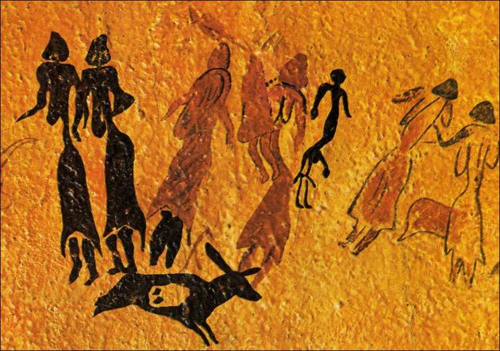

Um pouco de história...
A História da música é muito antiga, visto que desde os primórdios os homens produziam diversas formas de sonoridade.
Lembre-se, portanto, que a música é um tipo de arte que trabalha com a harmonia entre os sons, o ritmo, a melodia, a voz.
Todos esses elementos são importantes e podem nos transportar para outro tempo e espaço, resgatar memórias e reacender emoções.
Veremos como essa linguagem artística caminhou durante os séculos até os nossos dias para adquirir as características que possui hoje no Ocidente.
A humanidade possui uma relação longa com a música, sendo essa umas das formas de manifestação cultural mais antigas.
Ainda na pré-história, há mais de 50 mil anos, os seres humanos começaram a desenvolver ações sonoras baseadas na observação dos fenômenos da natureza.
Os ruídos das ondas quebrando na praia, os trovões, a comunicação entre os animais, o barulho do vento balançando as árvores, as batidas do coração; tudo isso influenciou as pessoas a também explorarem os sons que seus próprios corpos produziam. Como, por exemplo, os sons das palmas, dos pés batendo no chão, da própria voz, entre outros.
Nessa época, tais experimentações não eram consideradas arte propriamente e estavam relacionadas à comunicação, aos ritos sagrados e à dança.